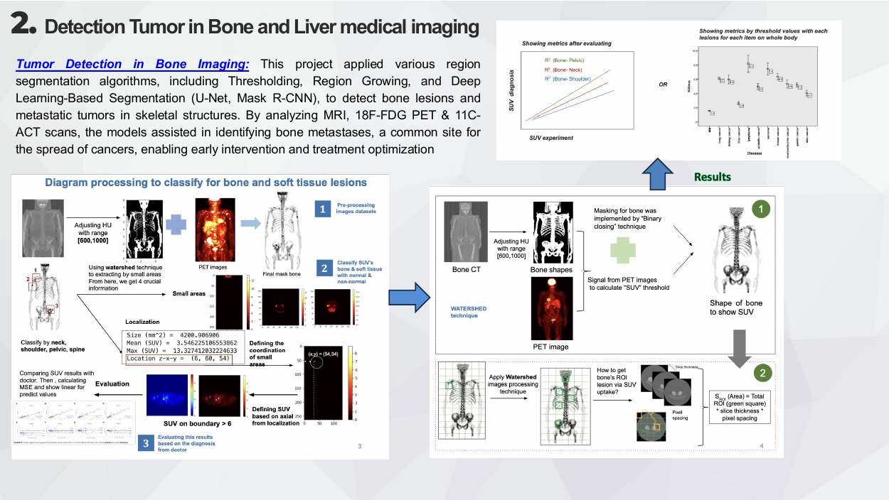
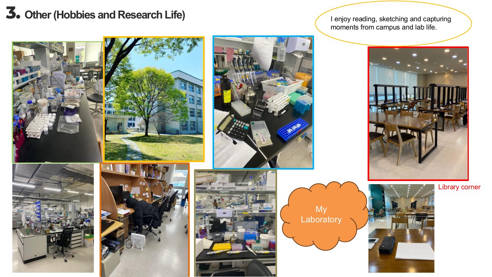

Coagulation Monitoring with Speckle-Variance OCT
Exploring computational analysis of speckle-variance optical coherence tomography for coagulation monitoring.
Explore project ↗Exploring biological systems through medical imaging, deep learning and computational data analysis.
I am a computational biomedical researcher with experience in deep learning for optical coherence tomography, bone and liver tumor imaging, and multimodal medical image analysis. I have an M.S. from Chonnam National University and research experience at BIEL Lab / Chonnam National University Hwasun Hospital. My current bioinformatics work includes building reproducible Nextflow workflows for Black Soldier Fly genomic diversity and inbreeding monitoring.
OCT, speckle-variance analysis and coagulation monitoring.
Segmentation, detection and multimodal CT, MRI and PET data.
Variant analysis, genetic diversity and reproducible workflows.
Research projects documented in my experience portfolio, alongside an emerging genomics initiative.

Exploring computational analysis of speckle-variance optical coherence tomography for coagulation monitoring.
Explore project ↗
Region-based and deep learning approaches for bone lesion and metastatic tumor analysis.
Explore project ↗
Investigating multimodal medical imaging and computational approaches for liver tumor identification.
Explore project ↗An emerging project for reproducible genomic diversity, relatedness and inbreeding analysis.
Explore project ↗
Proposed research framework integrating RTSTRUCT, RTDOSE, segmentation, DVH and longitudinal GTV analysis.
Explore framework ↗Nextflow-based genomic sequencing workflows, diversity assessment and reproducible reporting for Black Soldier Fly populations.
Research methods and semi-supervised deep learning for histopathology image segmentation.
Medical imaging research at Chonnam National University Hwasun Hospital, including optical imaging and tumor analysis.
Literature documentation, data collection and feature preparation for information systems research.
Selected highlights from the uploaded CV. See the complete CV for further experience, education and skills.
Research posters on coagulation monitoring using optical coherence tomography and deep learning are included in my research-experience portfolio. Full citation details and publication links will be added after verification.
Featured original research poster, with additional poster previews from the research experience portfolio.

I enjoy reading, sketching and documenting moments from campus and laboratory life. This space brings together the scientific and human sides of research.
Photographs from page 8 of my research-experience portfolio.
Interested in biomedical imaging, deep learning, computational genomics or collaborative research?
LinkedIn: please provide your public profile URL (the supplied /notifications/ URL is private to your account).
Add your preferred professional email, CV, ORCID and Scholar profile when ready.